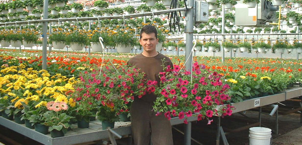

Our Story
A family business with roots in Norfolk County since 1962.

From field to greenhouse
In 1962, the Debono family grew field vegetables in Norfolk County and sold them at the Ontario Food Terminal in Toronto. Bedding plants and potted flowers came later, as other garden centres began buying from the family.
Today the family still runs the Waterford greenhouses, planting seedlings by hand and helping customers choose plants for their beds, baskets and vegetable gardens.
Visit the garden centre